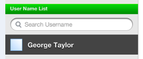
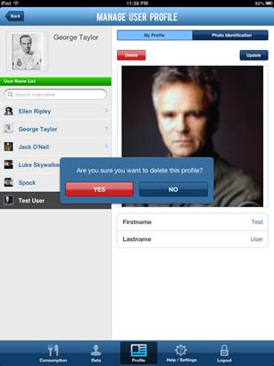
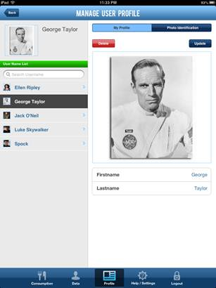
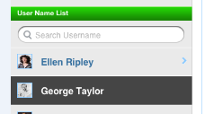

NOTE: The functionality below is ONLY available to Administrator users of the ISS FIT application.
The Administrator can create and manage user profile data either using the ISS FIT application, or by applying data updates pushed from the Earth Laboratory. This help section will explain how to perform these tasks via the ISS FIT application.
New users can register for an account using the ISS FIT application itself (see 1.2 "How to Register") on their own.
The Administrator can manage existing user profiles from the Profile page in the ISS FIT application. To access this page click on the "Profile" button on the bottom menu:
The Profile page will be displayed:
The Administrator can select the user to modify by clicking on a user name in the left menu under the "User Name List". A user search is also available by typing in the user name you're looking for:

To modify a user profile, click on the "Update" button:
After you're done making the necessary changes, click the "Save" button:
To a user profile photo you can click on the "Photo Identification" tab:
To modify the profile photo, click on the "Update" button:
An Administrator also has the ability to delete a user account using the ISS FIT application. To delete a user account click on the red "Delete" button.

Confirm you would like to delete the account by clicking "Yes". The selected user account will be deleted from the application.
The Administrator can also view user food consumption data inside of the ISS FIT application itself. This functionality can be performed from the Profile page. To access this page click on the "Profile" button on the bottom menu:
The Profile page will be displayed:

Select the user to view consumption data for by clicking on a user name in the left menu under the "User Name List". A user search is also available by typing in the user name you're looking for:

Once you have selected a user, click on the "Consumption" tab to view the selected user's consumption data: